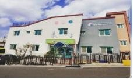
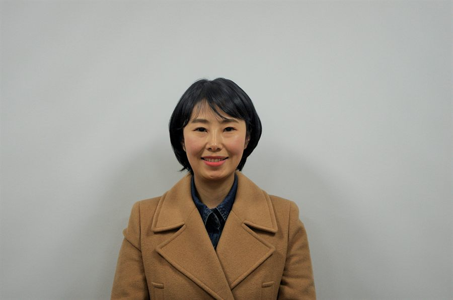
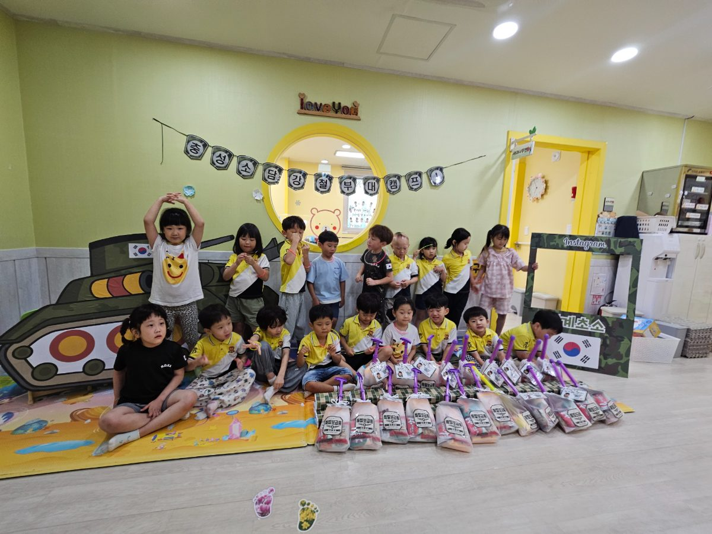
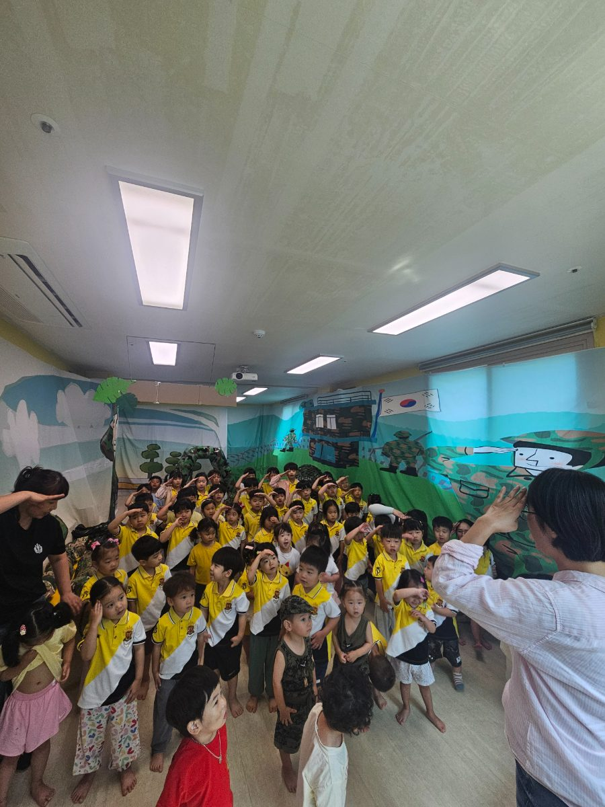
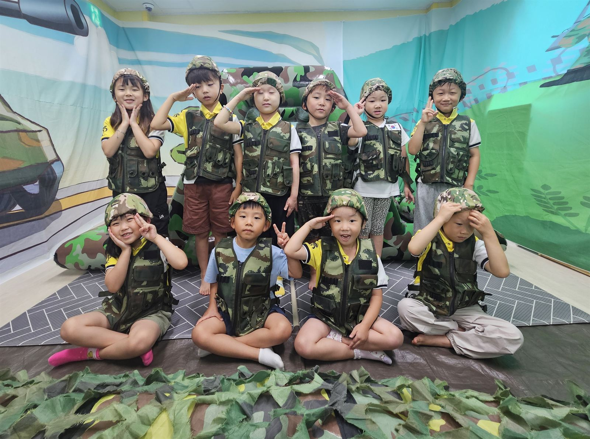
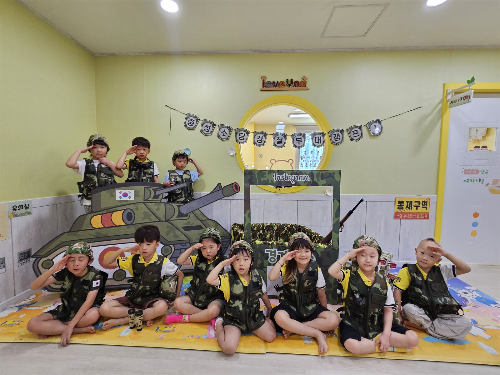
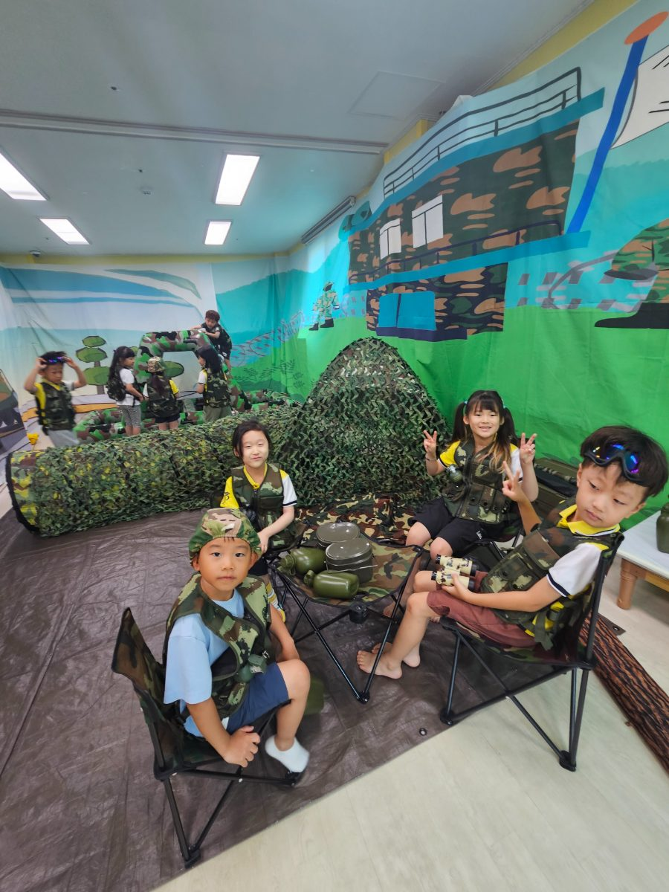
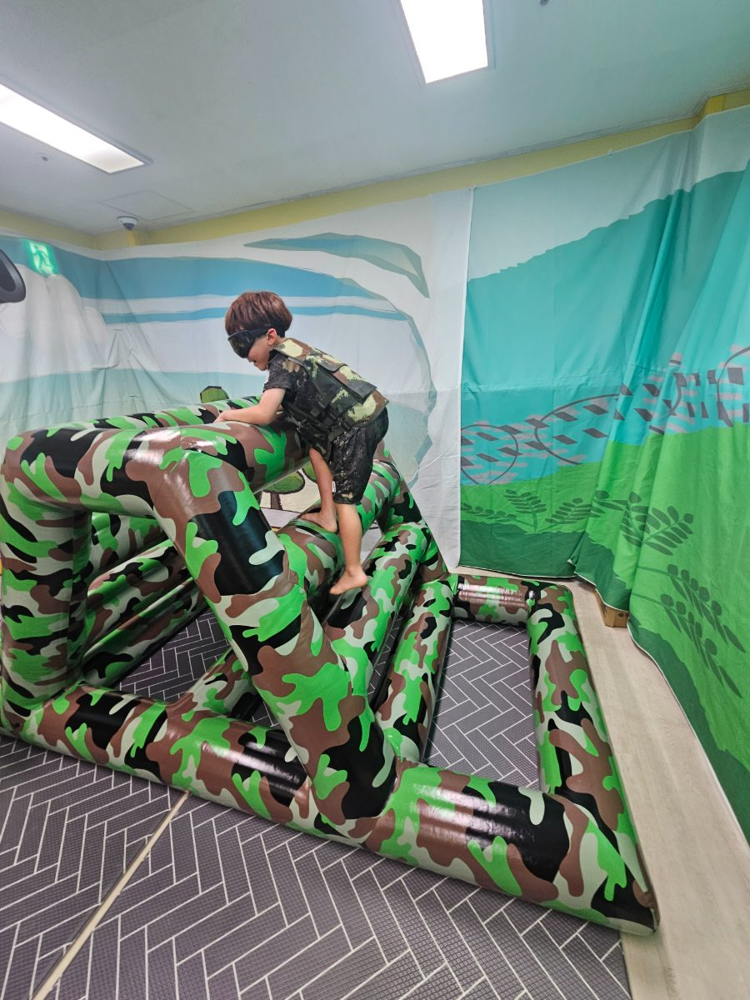
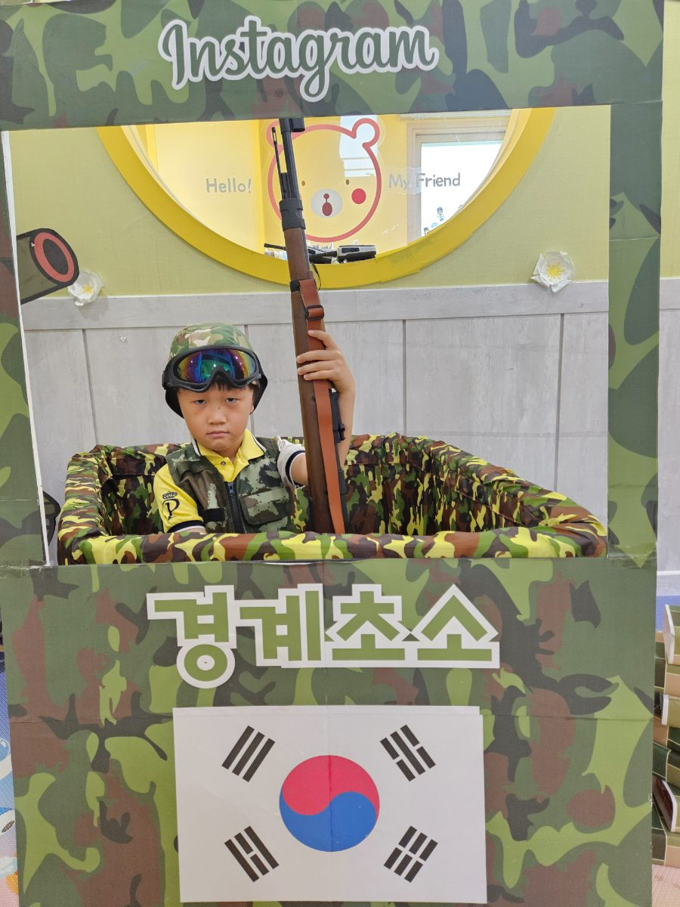
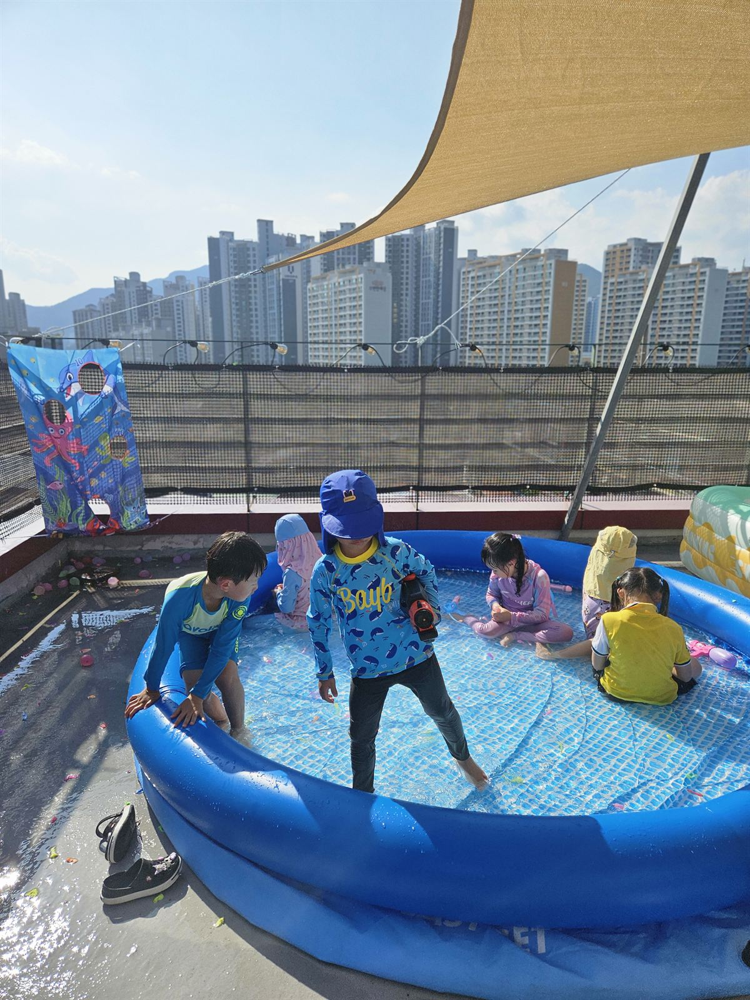

안녕하세요.
소담어린이집 홈페이지를 찾아주신 여러분을 진심으로 환영합니다.
아이 한 명을 키우기 위해서는 한 가정뿐 아니라 교사와 지역사회가 함께해야 합니다. 소담어린이집은 아이들의 오늘을 소중히 여기고, 행복한 성장의 과정을 함께 만들어가는 교육공동체입니다.
저는 28년 동안 유아교육 현장에서 아이들을 만나며 변하지 않는 한 가지를 배웠습니다. 좋은 교육은 지식을 많이 가르치는 것이 아니라, 아이가 스스로 배우고 세상과 연결되는 힘을 길러주는 것이라는 사실입니다.
소담어린이집은 '책과 예술을 사랑하는 창의적·긍정적·건강한 어린이'를 교육목표로 삼고 있습니다. 책을 통해 생각을 키우고, 예술을 통해 마음을 표현하며, 자연과 지역사회를 경험하면서 더불어 살아가는 삶을 배우도록 돕고 있습니다.
특히 자체 개발한 로컬교육과정 『책걷담 프로젝트』를 통해 아이들은 책을 읽고, 양산을 걷고, 자신의 생각을 표현하며 세상을 이해하는 힘을 키워갑니다. 또한 생태전환교육, 독서교육, AI 미래교육, 디지털 리터러시, 키즈아로마와 마음정원 프로그램 등 미래사회에 필요한 다양한 경험을 교육과정 속에 자연스럽게 담아내고 있습니다.
교육은 어린이집 안에서만 이루어지는 것이 아니라 가정과 함께할 때 더욱 큰 힘을 발휘합니다. 부모님과 끊임없이 소통하며 아이의 성장 과정을 함께 나누고, 서로를 신뢰하는 교육공동체를 만들어가는 것이 소담어린이집의 중요한 가치입니다.
앞으로도 소담어린이집은 아이 한 명, 한 명의 가능성을 믿고 존중하며, 책과 사람, 자연과 지역사회, 그리고 미래를 연결하는 교육을 실천하겠습니다.
아이들의 행복한 오늘이 건강한 미래로 이어질 수 있도록 언제나 따뜻한 마음과 전문성을 바탕으로 함께하겠습니다.
감사합니다.
소담어린이집 원장 전규미
소담어린이집은 2010년 개원한 어린이집으로, '책과 예술을 사랑하는 창의적·긍정적·건강한 어린이'를 교육목표로 합니다. 독서를 중심으로 한 교육과정을 운영하며, 리드인 독서교육, 책걷담 프로젝트(책을 읽고, 양산을 걷고, 표현을 담다)를 통해 책·지역사회·자연을 연결하는 로컬교육과정을 실천하고 있습니다.
경상남도 교육청 2026 유아독서중점시범기관으로 양산에서 유치원·어린이집 중 유일하게 선정되었으며, 경상남도 생태전환교육·이음교육 기관으로도 선정되어 지속가능발전교육(ESD)을 기반으로 숲놀이, 환경교육, 생태감수성 교육을 운영하고 있습니다.
리드인 독서교육으로 책 읽기의 즐거움을 바탕으로 사고력과 문해력을 키우고, 키즈아로마·마음정원 프로그램으로 향기와 명상, 호흡을 통해 아이들의 마음을 세심하게 돌봅니다. 수영, 축구, 발레, 체육, 댄스 등 다양한 신체활동으로 몸과 마음을 건강하게 키우며, AI와 두뇌과학을 접목한 파나톡스_브린트클래스를 통해 맞춤형 두뇌 성장 교육도 운영하고 있습니다. 이 밖에도 프로젝트 활동과 예술교육을 통해 미래사회에 필요한 창의성, 문제해결력, 공감능력을 기르고 있습니다.
지역사회와 함께 성장하는 교육을 지향하며 양산의 역사·문화·생태를 교육과정에 반영한 다양한 현장체험을 운영하고, 부모교육과 부모참여 프로그램을 통해 가정과 어린이집이 함께 아이의 성장을 지원하는 교육공동체를 만들어가고 있습니다. 한국119청소년단 운영기관으로서 다양한 지역사회 연계 프로그램과 전문 교사 연구공동체를 운영하며, 아이들의 행복한 오늘과 지속가능한 미래를 함께 만들어가고 있습니다.
책걷담프로젝트를 통해 책을 읽고 양산을 걷고, 표현을 담는 로컬교육과정을 운영합니다.
책 읽기의 즐거움을 바탕으로 사고력과 문해력을 키우는 독서교육입니다.
숲놀이, 환경교육, 생태감수성 교육으로 지속가능발전교육(ESD)을 실천합니다.
디지털 리터러시 교육을 통해 미래사회에 필요한 창의성과 문제해결력을 기릅니다.
향기와 명상과 호흡을 통해 우리 아이들 마음을 돌보는 프로그램입니다.
주제 중심 프로젝트 활동과 예술교육으로 창의적 표현력을 키웁니다.
수영, 축구, 발레, 체육, 댄스 등 다양한 신체활동으로 몸과 마음을 건강하게 키웁니다.
AI와 두뇌과학을 접목한 맞춤형 두뇌 성장 교육 프로그램입니다.








더 많은 생활 모습은 인스타그램 @sodam2010에서 확인하실 수 있습니다.
경상남도 양산시 동면 곡리4길 13
궁금하신 점은 아래 채널로 편하게 연락 주세요.